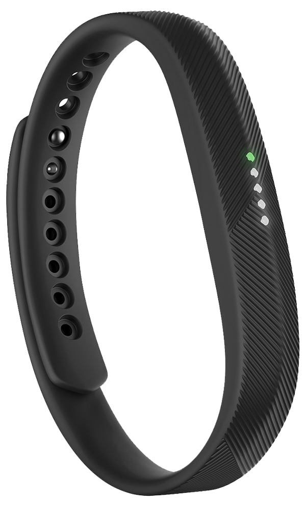

Pulsera inteligente para mayores. Siéntelos más cerca.

Seguridad
Recibe una alerta ante situaciones anormales: caída, cambios bruscos en las constantes, ausencia de movimiento o actividad.
Felicidad
Gracias a los sensores de ElderBand averigua cuándo tu mayor se siente triste o desanimado y te avisa.
Tranquilidad
Aviso automático a los servicios de emergencia. Botón de teleasistencia incluido en el dispositivo y notificaciones de alerta en la App.Conectividad
Un teléfono hecho pulsera para recibir y establecer llamadas mediante la voz. Sin guías telefónicas, sin complicaciones, sin esperas.Nuestro Propósito


La pulsera
ElderBand es una pulsera inteligente pensada por y para nuestros mayores. Equipada con diferentes sensores, es capaz de:
Analizar el estado anímico
Detectar situaciones de emergencia
Recibir y realizar llamadas
Controlar la actividad
Monitorizar el sueño
Medir las pulsaciones
Contar pasos y calorías
Mucho más


La app
Descarga la App de ElderBand y sincronízala con la pulsera para descubrir toda la información. Activa el aviso directo a los servicios de emergencias y recibe alertas en el móvil ante situaciones anormales con tu mayor.
"Mi hija dice que se queda más tranquila y a mi me gusta porque así
puedo llamar a mis amigas y todo aunque no me acuerde de los numeros"
"Es muy fácil de llevar y yo me siento segura por si me pasa algo, que
sino nadie se entera hasta el día siguiente"
"Me encanta cuando me llaman y no tengo que ir corriendo a por el
teléfono"
¿Cómo afecta la soledad en el día a día de nuestros mayores?
¿Quiénes somos?
Somos un grupo de emprendedores de la Universidad de Granada concienciados con los problemas que enfrenta la sociedad, especialmente la de edad avanzada.
Queremos traer al presente la tecnología del futuro para ofrecer soluciones que nos hagan volver a conectar